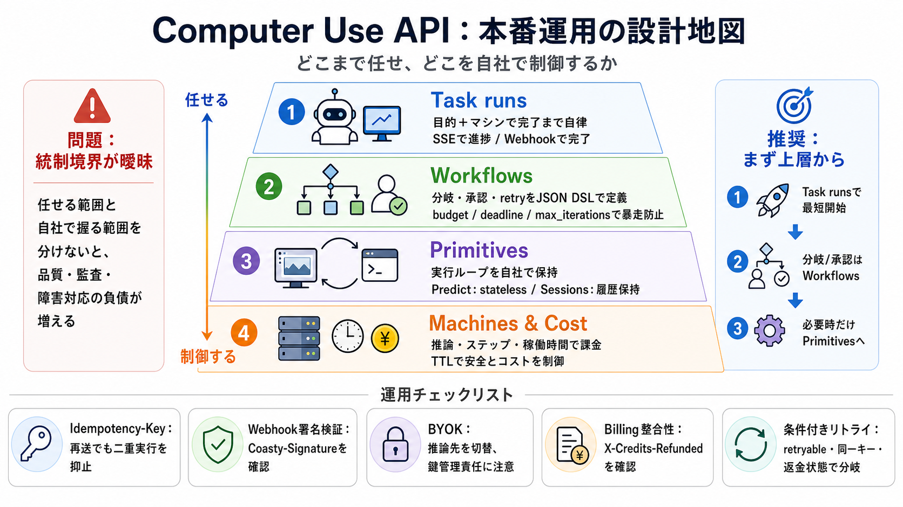

How to get the id of the run from within a component?
RUN_ID is for the whole pipeline run while the EXECUTION_ID is for a single component task execution. It might be better…

自律エージェント（LLMでブラウザ/端末操作）を、Task runs / Workflows / Machines / Primitivesの層で捉え直し、 設計指針・運用要点を読みやすく圧縮します。
自律実行は「サーバ側に任せる範囲」と「実行ループを自社で持つ範囲」を分けないと、品質/監査/障害対応の負債が増えます（設計責務の境界が要）。
さらに課金は推論だけでなく実行ステップやマネージドマシン稼働時間に効きます。
「目標達成まで任せるほど高い層」「制御ループを握るほど低い層」として、必要な統制レベルに合わせて降りられます。
「1つの目標（task）＋managed Linux/Windows」を渡し、スクリーンショット→推論→アクション→検証をエージェント側で回します（進捗はSSE/完了はWebhook）。
Task runsをステップとして組み合わせ、if/contains、assert、human_approval、retry等をJSON DSLで定義できます。
さらにbudget_cents / max_iterations / deadline_secondsで暴走をガードします。
アプリ側が「次のスクショを渡して次のアクションを得る」実行ループを握る設計です。 ステートレス/ステートフルを選べるため、品質と運用負荷を調整できます。
タイムアウトや通信断でクライアントが再送する前提で、同一Idempotency-Key対応操作は「reserve→結果再実行」で二重課金/二重実行を抑止します。
WebhookはCoasty-Signature (t, v1)で署名されるため、検証するのが安全です。 またwebhook_secretはレスポンスで一度だけ返る前提で、保管と検証実装が運用要になります。
BYOKでは推論先をCoastyのマネージドモデルから、あなたのAnthropic/OpenAIアカウントへ切り替えます。
鍵漏えいを避ける設計（返却されない/スクラブ/暗号保管）により安全性を高めますが、運用責任は増えます。
料金は「推論トークン」だけでなく、runsのステップ課金、マネージドマシン稼働時間課金にも依存します。
TTLを設定して安全とコストを同時最適化するのが要点です。
runsの課金は「先に引き落とし→失敗時に返金」という挙動が前提です。
最重要はX-Credits-Refundedヘッダで、無い場合は503 BILLING_UNAVAILABLEを含む前提でリトライ判断が必要です。
エラー時は「同じキー再実行が安全か」「返金ヘッダがあるか」「refund確認が必要か」を条件として決める必要があります。
テンプレ化した共通エラーハンドラで運用負債を抑えます。
開発方針としては「まずTask runs/Workflows中心で立ち上げ、必要になった地点でPrimitivesへ降りる」が最も整合的です。
そのうえで、TTL・Idempotency-Key・Webhook署名検証・返金ヘッダ確認を省略しないことが重要です。
以下の要点（断片情報）から、設計責務・安全性・課金整合性・運用リトライ・BYOK・TTLを整理しました。
RUN_ID is for the whole pipeline run while the EXECUTION_ID is for a single component task execution. It might be better…
# How to get the workflow run ID? May 16, 2020 · 6 comments · 5 replies. | I would like to send a Telegram message conta…
API ReferenceData APIHelp CenterCommunitySample ProjectsLoginSign upUbidots. ## Key as Path Parameter. A key is an ident…
I'm trying to make something happen when someone clicks a key. (in the keyboard) but i don't know how. i know LUA uses s…
KeyCount stores data for all of your mythic+ runs, including untimed and abandoned (!) runs, so you'll finally know just…